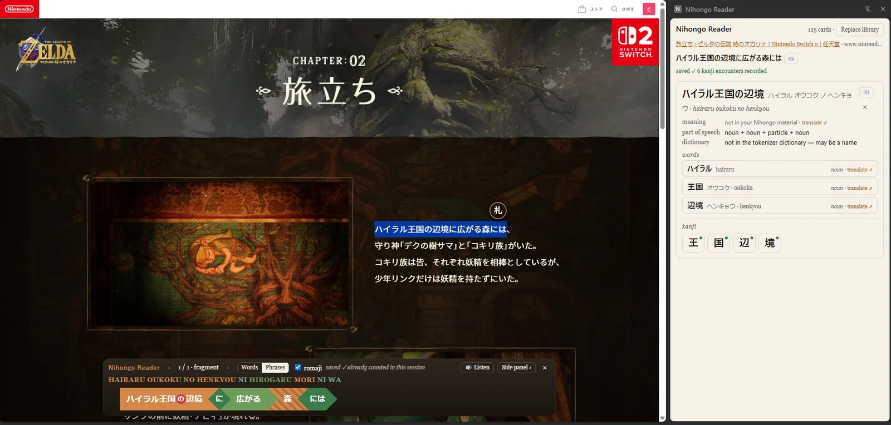
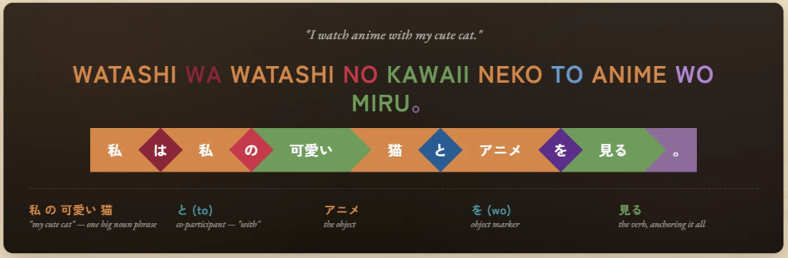
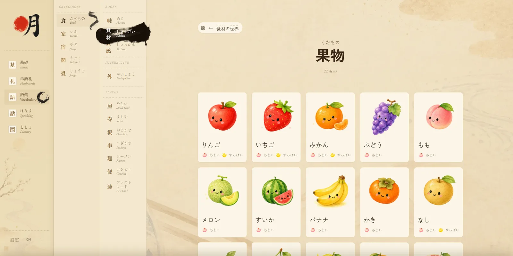
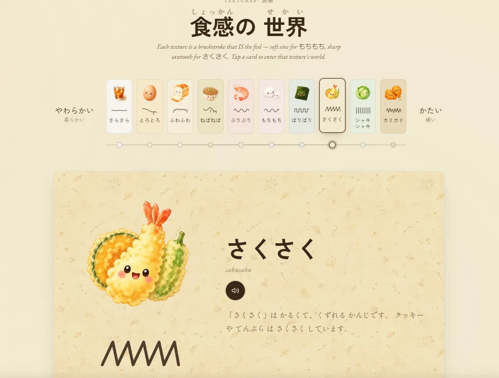
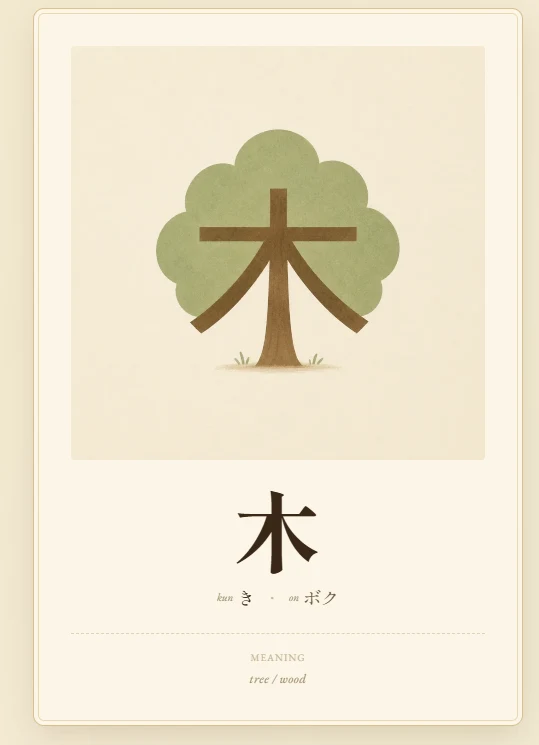
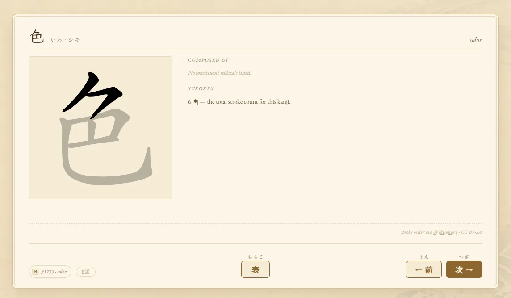

Learning Japanese.
A personal study space built as I go. Vocabulary books tied to hand-drawn cheatsheets, flashcards, a small dictionary. The tools are mine — the shelf is open.
Nihongo Reader — Chrome extension Read any Japanese page with my own cards in testing — not in the store yet
I started this because the apps I tried all taught the same 500 words in the same order, and none of them knew what I had already learned. So the rule here is the opposite: everything is tied to what I have actually studied. A word I meet in a story links back to the card I drew for it, the sentence I broke apart, the picture I made to remember it.
The study app is the desk. The reader extension is the part I am most excited about: it takes that same desk out into the wild, so a Nintendo page or a news article becomes readable in place — the sentence broken into particle-tagged blocks, each word carrying my own mnemonic, every kanji I look at quietly counted as an encounter.
It is not a product and there is no roadmap. It grows in the direction I happen to be studying, which is why there is a whole world for eating out, and why the dictionary knows the word for Pokédex.
what’s inside
Vocabulary books
Themed word lists — home, food, stays, the internet — each word illustrated and tied to a watercolour cheatsheet.
Flashcards
Kanji and vocabulary decks with animated stroke order, hand-made mnemonic pictures, and spaced review.
Writing & grammar
Kana, particles and sentence structure, taught as coloured blocks you can read left to right.
Shadowing studio
Hear a phrase, record yourself, and get scored on rhythm, clarity, pitch and naturalness.
Food & dining
A whole eating-out world — menus, a food gallery, and guides to flavour and texture words.
Dictionary
Every everyday kanji with its readings and meaning, plus the game vocabulary I keep running into.
The reader
A Chrome extension that reads the page you are on, in the same blocks, against your own cards.
gallery
Reading a page nobody wrote for a learner読む
Textbook Japanese is graded. The internet is not. The reader is my answer to that: it takes the page as it is and does the work of a patient teacher beside you. Select a line and a 札 button appears; tap it and the sentence drops into a bar at the foot of the page, already taken apart.
The panel on the right is the part that matters. It lists every word in the selection with its reading, then every kanji inside those words, marked with a dot when it is one I have a card for. Each kanji I look at is counted as a studied encounter, so the app slowly learns what the web has already taught me. Nothing is sent anywhere unless I ask for it.

One alphabet for every sentence文型
Japanese marks the job of each word with a particle rather than with word order, which is exactly what an English speaker keeps losing track of. So every sentence in this project — in the grammar lessons and in the reader alike — is drawn in the same shapes: words are chevrons, particles are diamonds, and the verb closes the line. Colour carries the role, not decoration.
Once you have read twenty sentences this way, the shape arrives before the meaning does. You see a red diamond and know something has just been made the topic, before you have finished reading the word in front of it.

Words worth looking at語彙
The vocabulary books are themed the way a life is, not the way a syllabus is: home, food, stays, the internet. Every entry is drawn rather than photographed, because a drawing can carry the one feature that makes the word stick and leave everything else out.
The stranger sections are the useful ones. Texture words get a line beside them that behaves the way the word feels — a soft wave for もちもち, a sawtooth for さくさく — which is the only way I have found to remember a set of words English simply does not have.


A card is a picture first単語札
Most kanji decks show you a character and ask you to recall a word. These start from the other end. The picture is the mnemonic, drawn so the character is inside the thing it means: 木 is a tree whose trunk and branches are the strokes themselves. The readings sit underneath, kun first, then on.
Behind the card sit the parts that make it work: animated stroke order, the story I wrote when I made it, and a review queue that asks again at widening intervals. The reader links straight back here, so a kanji met in the wild opens the card I already drew for it.

And the dictionary underneath辞書
Under all of it is a small dictionary the reader carries with it: every one of the 2,136 kanji taught in Japanese schools, with their readings and meanings, plus the game vocabulary I keep running into. A character with no card of its own still answers when you tap it, which means a translation service is never the first thing reached for.
